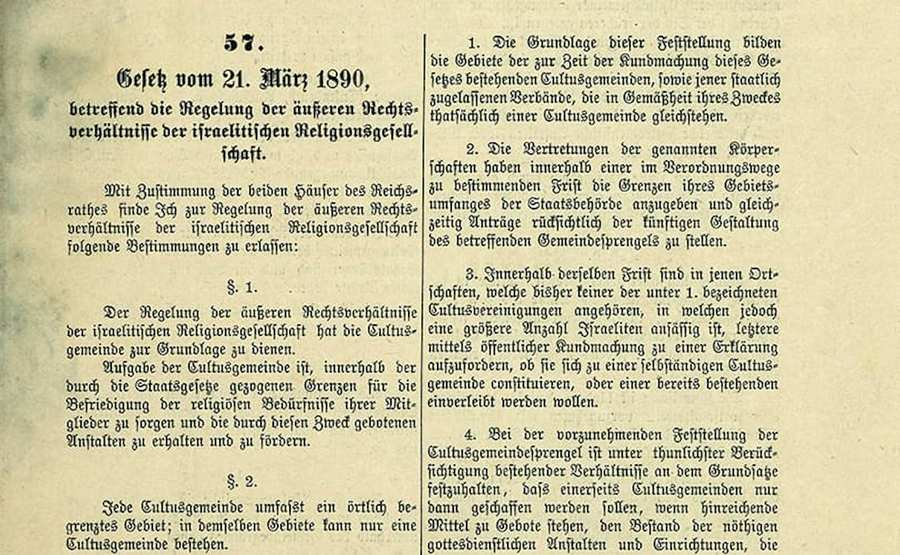

Создание автономной еврейской религиозной общины было официально санкционировано императором Францем Иосифом в 1849 году. Это отличие было первой из серии мер, завершившихся окончательным созданием еврейской общины (Israelitischen Kultusgemeinde), наделившей еврейскую общину высшим дипломатическим статусом (Israelitischen Kultusgemeinde) в качестве официального представителя, обслуживающего еврейское население Вены, а также еврейскую общину Австрии.
Эдикт толерантности
Еврейское население Монархии официально подвергалось и было вынуждено терпеть множество горьких лишений до этого долгожданного официального заступничества со стороны Монархии. Первое великое изгнание 1420/21 г., второе изгнание 1670 г. были оскорблением и насилием над еврейскими гражданами монархии. Терпеливое в самых крайних обстоятельствах, публично подвергавшееся остракизму и враждебному отношению, еврейское население вынесло лишения Вены и монархии. Под влиянием просвещения император Иосиф II издал Указ о терпимости, который привел к эмансипации евреев. Впервые гражданские права были распространены на еврейское население, а дискриминационные меры были отменены. Формирование религиозной общины и официальное богослужение официально еще не допускались.
Исаак Мангеймер, 1858 г.
В 1824 году Михаэль Лазар Бидерман рекомендовал пригласить раввина Исака Ноа Мангеймера в качестве проповедника в Вену. Поскольку официально еврейской общины не существовало, раввин был назначен «директором официальной императорской и королевской еврейской религиозной школы Вены».
В 1828 году директор еврейской общины Исаак Лев Хофманн (после 1835 года — «Эдлер фон Гофмансталь») пригласил раввина Лазаря Горовица, студента Хасам Софера в Прессбурге, на должность главного раввина Вены. Поскольку в то время еврейская община не имела официального признания, раввину пришлось принять титул «руководителя ритуала» (Ritualienaufseher). Он следовал строгим принципам в отношении кашрута и других областей Галахи, но всегда старался сбалансировать различные течения внутри еврейской общины. Он пользовался большим уважением и репутацией среди
Лазар Горовиц
все группы внутри еврейской общины Вены, включая евреев-сефардов. Вместе с проповедником Исааком Ноа Мангеймером он участвовал в революции 1848 года и кампании за отмену еврейской присяги («больше иудаизма»). Горовиц был фаворитом эрцгерцогини Марии Доротеи, которая интересовалась еврейской литературой и верила в возвращение евреев на Святую Землю. По его просьбе она организовала отмену в 1851 году запланированного выселения сотен еврейских семей из Вены.
12 декабря 1825 года краеугольный камень Венской синагоги был заложен в Seitenstettengasse 4 и 9 апреля 1826 года освящен Мангеймером. Синагога была спроектирована по проекту архитектора Йозефа Корнхойзеля, и при строительстве жилого дома строго соблюдались действующие строительные нормы, что помешало ее разрушению в ноябре 1938 года. Впервые после изгнания в 1670 году еврейское население Вены одержало победу в создании духовного и религиозного центра, сочетающего в себе синагогу, школу и ритуальную баню. В 1826 году Саломон Зульцер был назначен на должность главного кантора Венской синагоги, в которой он прослужил 56 лет.
Гражданская война 1848 года побудила многих еврейских интеллектуалов принять участие в борьбе за освобождение евреев в рамках гражданских волнений. В связи с этими обстоятельствами в 1849 году состоялась примечательная встреча с молодым императором. Наконец, в 1852 году «временный устав» Венской общины был признан официальным. Сообщество достигло прочной автономии в решении внутренних и религиозных проблем. Леопольд фон Вертхаймштайн был первым президентом (до 1863 года). Адольф Елинек последовал за Мангеймером в 1856 году как второй раввин, назначенный в Вену. Храм Леопольдштдтера, построенный по проекту Людвига Фёрстера, был освящен в 1858 году.
Вертхаймштайн, Леопольд
В 1867 году в Австрии впервые были признаны конституционные рамки, касающиеся еврейского населения. Еврейскому населению были предоставлены права, предоставленные всем гражданам, и получено полное гражданство. В ходе этих событий еврейская община росла довольно быстро: при регистрации в Еврейской общине Вены в 1860 году еврейское население насчитывало 6200 членов, в 1870 году их было 40 200, а на рубеже веков - 147 000, обнаруживая свою судьбу в имперской столице.
Реформы в обществе 1872 года, проведенные либеральной прогрессивной властью под руководством Игнаца Курандаса, привели к внутреннему конфликту. Ортодоксальные последователи Саломона Спитцера хотели покинуть общину. Компромисс смягчил конфликт. В том же году был основан монументальный пример еврейской филантропии: больница Ротшильдов. В 1886 году раввин Блох основал «Австрийско-еврейский союз», целью которого была защита политических прав евреев, улучшение еврейского образования и поддержка еврейской гордости за свою идентичность. 1890 г. «Еврейский закон», кодифицирующий отношения между различными общинами и государством на единой правовой основе.
Цви Перес Хаес (1927)
1918 г. Главным раввином стал Цви Перес Хаес, представитель национального иудаизма. Его светское образование укрепило связи с восточноевропейским еврейством. Хаес также является основателем первой еврейской гимназии и еврейской педагогики в Вене. В честь его достижений в 1984 году вновь открылась еврейская гимназия, носящая его имя.
После столетия усилий по эмансипации евреев в годы между двумя мировыми войнами накопились антисемитские беспорядки, разжигаемые христианскими социалистическими, немецкими националистическими и национал-социалистическими партиями. Религиозно мотивированная ненависть к евреям теперь сопровождалась расовым антисемитизмом, кульминацией которого стала первая волна преследований уже в первые дни после так называемого «аншлюса» в марте 1938 года. Евреев преследовали, гоняли через Вену, их квартиры и офисы разграблялись.
Эти беспорядки достигли своего пика в ночь с 9 на 10 ноября 1938 года: организованные национал-социалистами как вспышка спонтанного общественного гнева против евреев, венские синагоги были осквернены и разрушены в эту ночь - только центральная синагога, хотя и была разрушена, не была подожжена из-за ее интеграции в комплекс зданий. В эту ночь многочисленные евреи
Городской храм, ноябрь 1938 г.
магазины были разграблены; многие евреи были задержаны и, за некоторыми исключениями, в последующие дни отправлены в концентрационный лагерь Дахау.
Нюрнбергские законы, также действовавшие в оккупированной Австрии с мая 1938 года, были дополнены бесчисленными антисемитскими постановлениями. Шаг за шагом это привело к тотальному лишению прав на свободу и личную собственность, исключению почти из всех профессий, исключению из школ и университетов и впоследствии к видимой дискриминации посредством обязательного ношения значка в форме желтой звезды.
Еврейские организации и учреждения были принудительно распущены, лишены имущества. С созданием летом 1938 года национал-социалистического «Zentralstelle für jüdische Auswanderung» («центра еврейской эмиграции») принудительная массовая эмиграция получила организационные рамки. Оставив все свое недвижимое и движимое имущество, к концу октября 1941 года более 130 тысячам евреев удалось бежать, во многих случаях благодаря финансовой помощи международных еврейских организаций и организационной помощи еврейской общины. Однако около 16 000 из них были позже снова пойманы и депортированы их преследователями в другие европейские страны. На Ванзейской конференции, состоявшейся в январе 1942 года, были определены основные черты организации и координации уже заранее намеченного полного вымирания европейского еврейства. После завершения массовой депортации из Вены к октябрю 1942 года властители национал-социалистов уже перевезли более 47 000 евреев в гетто, лагеря смерти и другие места уничтожения; до 1945 года последовали дальнейшие депортации. Всего во время Холокоста было уничтожено более 65 500 евреев из Австрии. В Австрии выжило всего около 5500 евреев, большинство из них благодаря так называемым «мишеэнам» (смешанным бракам).
После Второй мировой войны Австрии понадобился значительный промежуток времени, чтобы взять на себя ответственность. Почти никто не нашел смысла приглашать «эмигрантов» вернуться на родину. Лишь в 1980-е годы люди начали переосмысливать и размышлять над общественным мнением. В июле 1991 года австрийское правительство составило заявление, переданное Бундесканцлером Враницким австрийскому парламенту, в котором признало участие Австрии в преступлениях Третьего рейха.
Под этим тяжелым внешним давлением еврейской общине нелегко восстановить новую религиозную жизнь. Большинство изгнанных евреев отказались вернуться на родину после войны, и еврейская община Вены оставалась небольшой. В 1938 году в Сообществе насчитывалось более 185 000 членов, в конце 1990-х годов в Сообществе было зарегистрировано 7 000 человек. Многие бывшие беженцы за последние десятилетия нашли убежище в Вене и начали новую жизнь.
Ариэль Музыкант, президент IKG, 1998–2012 гг.
Видимые признаки жизни небольшой, но очень энергичной еврейской общины исходят из еврейской синагоги, вновь открытой в 1963 году после обширной реконструкции, «Санатория Маймонидес-Центрум» 1972 года на Бауэрнфельдгассе, «Цви-Перес-Хайес-Шуле», вновь открытой в 1984 году, в 1986 году Фонд Рональда С. Лаудера учредил «Бет-Хабад-Шуле» и различные другие учебные заведения в основном развивались в последние десятилетия.
Два года назад на Темпельгассе, до 1938 года на месте храма Леопольдштедтера, открылся новый еврейский центр, в котором разместилось множество учреждений, включая психосоциальный центр ESRA.
Спустя 500 лет после первоначального основания и примерно через 60 лет после своего упадка, в мае 1992 года во втором районе Вены вновь обосновалась сефардская община, в которой появилась синагога и зал, используемый для торжеств.
В 1863 году Леопольд фон Вертхаймштайн, первый президент еврейской общины, а в последние годы президенты доктор Иван Хакер, Пауль Гросс и доктор Ариэль Музыкант сформировали развитие общины, известной как IKG. В период с 1982 по 1998 год доктор Хакер и президент Гросс представляли судьбу еврейского населения Вены. Они добились успехов в борьбе с нетерпимостью и антисемитскими настроениями и в поддержке улучшения отношений с нееврейскими общественными и религиозными организациями.
Оскар Дойч, президент IKG с 2012 г.
Их преемник, доктор Ариэль Музикант, был первым президентом IKG, родившимся после Холокоста и Второй мировой войны. Он выступает за продолжение курса своих предшественников. Среди его последних и заметных достижений — то, что он дал толчок к созданию исторической комиссии. 2012 год последовал за назначением на пост президента давнего вице-президента Оскара Дойча. Он был переизбран в 2017 году.